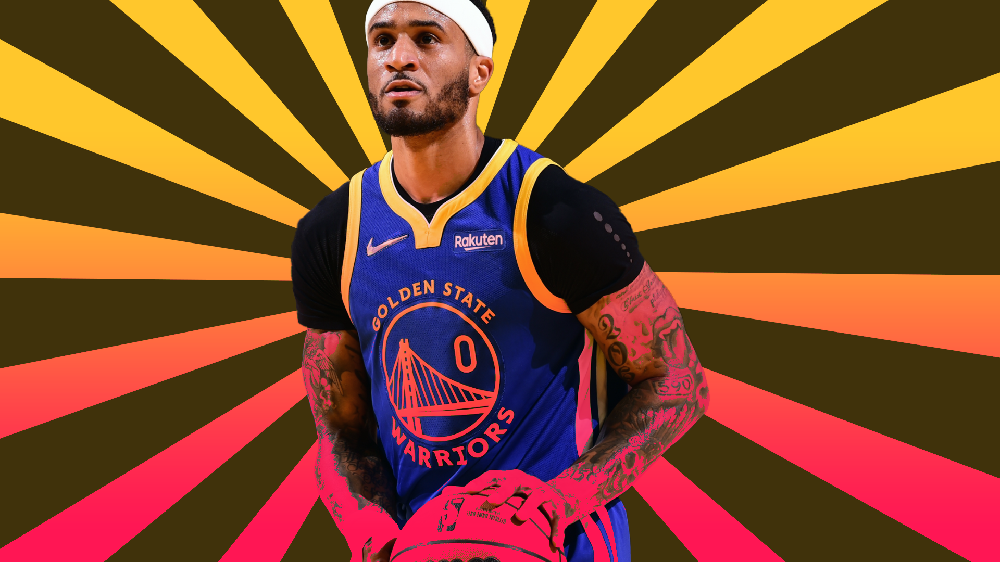
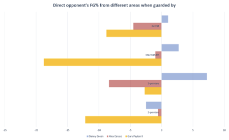

Could Gary Payton II be essential to this Golden State Warriors team?
Gary Payton II was a late inclusion to the Warriors, but he has fought his way into the thick of the rotation and the hearts of fans.
Sean Carroll illustration
Stephen Curry and Draymond Green played an active role in the Golden State Warriors’ front office decisions this past offseason. They fired some shots in exit interviews after losing to the Memphis Grizzlies in the play-in game and put pressure on the team to get better.
The two wanted to win and wanted the front office to prioritise veterans in free agency. It was an awkward position for Bob Myers as he was sitting on two lottery picks in the upcoming draft (soon to be Jonathan Kuminga and Moses Moody) and not a whole lot of wiggle room.
After bringing in veterans like Andre Iguodala, Nemanja Bjelica and Otto Porter Jr., the Warriors had only one roster spot open, their 15th and final. In line with their win-now mandate, Steph and Dray both pushed for Avery Bradley; they saw the 11-year guard as someone who would help the team win immediately.
But Myers and the front office didn’t agree. They waived Bradley and decided to retain the 29-year-old Gary Payton II.
At the time, he seemed like a reach. Before the 2020-21 season, he was a player who, despite his defensive prowess, couldn’t stick on an NBA roster and without a solid traditional offensive skillset, he didn’t look like he would fit on any roster.
Before this season, GPII was Gary Payton’s kid, a son who failed to crack the rotation of the Milwaukee Bucks, LA Lakers and Washington Wizards.
But now, Gary Payton II is the Young Glove, The Mitten and quite possibly, Golden State’s secret weapon in their upcoming Finals run.
-
If Stephen Curry isn’t the best shooter in the universe, if Draymond Green can’t command the defence the way he does and if Steve Kerr doesn’t have the gall to throw a 6’3” guard at centre, none of this happens.
But everything has broken right for GPII and he’s the above-the-rim finisher Golden State needed while also being the lead perimeter defender they lacked.
It’s an embarrassment of riches. The Dubs need help on the wing, especially if Klay Thompson can’t defend at the level he used to after missing two years of basketball, and someone to finish the wide-open dunks the shooters open up.
One of the more underrated elements of Golden State’s rise to basketball’s elite is how much they’re not a jump-shooting team.
Charles Barkley proudly exclaimed that the Warriors wouldn’t win a title in 2015 because they shoot too many jump shots (he also said that they play “little girly basketball”).
In 2014-15, the Warriors were second in the league at points in the paint (behind only the Grit & Grind Memphis Grizzlies). This season, Golden State takes the 12th most attempts at the rim and makes them at the third-best mark in the league per Cleaning the Glass.
Golden State is the only team in the top five of accuracy at the rim that doesn’t boast one of the best scoring centres in the NBA. Utah (1) has Rudy Gobert, Denver (2) has Nikola Jokic, Washington (4) has Montrezl Harrell and Phoenix (5) has Deandre Ayton.
Not even the biggest Kevon Looney stans would argue with that.
But on the topic of the Loon; Kevon is looking increasingly like a regular season only player. In his prime, he was a sneaky-good switch defender who did enough on switches against James Harden and Chris Paul while taking only point-blank shots a Steph Curry-led offence fed him.
In their first regular season matchup against the Phoenix Suns, a likely playoff opponent through the first quarter of the season, Looney was a man without a country. His verticality is fine on a random Tuesday against the Minnesota Timberwolves, but a smart point guard like Chris Paul will find a sore spot in the defence and poke it until it bleeds (see Porter Jr., Michael).
That’s where the Payton find is so crucial. Golden State can win games, but with a 38-year-old Andre Iguodala, they might need to look elsewhere for the closing lineup.
The Death Lineup used to play Harrison Barnes and Iggy at the forward spots. Draymond could play centre on defence and orchestrate like he so often does on that end. Is there a world in which the 6’3” GPII becomes the new forward in that slot?
No, I don’t mean he’ll take Andre’s role in guarding LeBron James, but he’ll take Klay Thompson’s role.
Klay is such a wildcard. We have no idea what he’s going to look like after missing two entire seasons with ligament injuries, but we can almost be certain he won’t have the same versatility and speed on the defensive end, at least not immediately.
Because of this, Kerr might look to slide him down into that Andre/big wing defender role. He won’t be the permanent option on the CP3s of the world anymore, but the team would be happy having him switch onto those players.
Move further up the lineup and Payton is the new guard stopper.
In 22 appearances and in just under 15 minutes a night, Gary Payton has been a terror on defence, holding opponents -8.8 percent less makes from the field with an incredible -18.8 percent at the rim per NBA.com’s tracking data (as of 6 December 2021).
Compare that with players who have a similar role on the defensive end like Alex Caruso and Danny Green and it really shows how much of an impact he’s making. This isn’t some small sample size either as, at the time I collected those stats, GP had played 21 games compared to the others’ 23.
I really hope he doesn’t lose what got him a roster spot in the first place - unbridled defensive intensity.
When Facundo Campazzo came over from Europe, I remember seeing an early-season tweet that went something like “wow, I love Campazzo picking up the other guard at full court, can he really keep it up for an entire season?”
The answer was no, but what’s great about Payton is that every now and again, he just picks up players at full court, regardless of who they are. I like to think it’s just to piss them off.
When Payton picked up CP3 from full court in their first matchup, I think we heard him sigh from my lounge room.
-
On the offensive side, this is where the Light Years mantra really gets to flex its name.
Earlier, I mentioned that the Warriors now have an above-the-rim finisher to hit the easy shots this offence creates. Andrew Bogut made a living by finishing alley-oops from Steph and there was always the tic-tac-toe lob with Draymond at the free throw line.
Now, Bogut’s offensive role has been replaced by GPII. He cuts baseline to find open dunks and layups but is always the last-man-standing when Curry is doubled, giving him free lanes to the hoop.
Unlike Bogut though, Payton is quick enough to run in transition and the Warriors have their first legitimately exciting option to finish on the break and his Russell Westbrook-esque one-handed dunks are already some of the best in Warriors history.
When Payton is on the court, the Warriors get out in transition 2.5 percent more, a near league-leading mark amongst guards per Cleaning the Glass and the team scored 2.2 more points per 100 transition possessions when he’s out there. and the team scored 2.2 more points per 100 transition possessions when he’s out there.
In strictly halfcourt settings, The Mitten is still elite, bringing the team’s offence up by 4.7 points per 100, a top-75th percentile in the league.
If you’re worried about this being a regular season phenomenon, don’t worry because we’ve seen this archetype of player work in the past. I like to think that Bruce Brown walked so that GPII could run.
Just like Bruce, Gary is surrounded by Hall of Famers who more than make up for his offensive shortcomings. It warps the traditional basketball framework and puts an underqualified small human at the epicentre of the best scoring we have ever seen.
Payton will always be elite on the defensive end, if he can get by on offence as he has, then the Warriors have another tool come playoff time. Where does that leave us, at the fourth iteration of the Death Lineup?